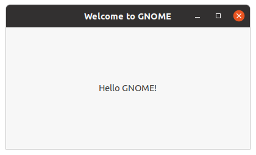

Tutorial#
This page shows from the ground up how to create a Meson build definition for a simple project. Then we expand it to use external dependencies to show how easily they can be integrated into your project.
This tutorial has been written mostly for Linux usage. It assumes that you have GTK development libraries available on the system. On Debian-derived systems such as Ubuntu they can be installed with the following command:
sudo apt install libgtk-3-dev
In addition, it is recommended to have the glib library with version 2.74 or higher.
It is possible to build the GUI application on other platforms, such as Windows and macOS, but you need to install the needed dependencies.
The humble beginning#
Let’s start with the most basic of programs, the classic hello
example. First we create a file main.c which holds the source. It
looks like this.
#include <stdio.h>
//
// main is where all program execution starts
//
int main(int argc, char **argv) {
printf("Hello there.\n");
return 0;
}
Then we create a Meson build description and put it in a file called
meson.build in the same directory. Its contents are the following.
project('tutorial', 'c')
executable('demo', 'main.c')
That is all. Note that unlike Autotools you do not need to add any source headers to the list of sources.
We are now ready to build our application. First we need to initialize the build by going into the source directory and issuing the following commands.
$ meson setup builddir
We create a separate build directory to hold all of the compiler output. Meson is different from some other build systems in that it does not permit in-source builds. You must always create a separate build directory. Common convention is to put the default build directory in a subdirectory of your top level source directory.
When Meson is run it prints the following output.
The Meson build system
version: 0.13.0-research
Source dir: /home/jpakkane/mesontutorial
Build dir: /home/jpakkane/mesontutorial/builddir
Build type: native build
Project name is "tutorial".
Using native c compiler "ccache cc". (gcc 4.8.2)
Creating build target "demo" with 1 files.
Now we are ready to build our code.
$ cd builddir
$ ninja
If your Meson version is newer than 0.55.0, you can use the new backend-agnostic build command:
$ cd builddir
$ meson compile
For the rest of this document we are going to use the latter form.
Once the executable is built we can run it.
$ ./demo
This produces the expected output.
Hello there.
Adding dependencies#
Just printing text is a bit old fashioned. Let’s update our program to create a graphical window instead. We’ll use the GTK+ widget toolkit. First we edit the main file to use GTK+. The new version looks like this.
#include <gtk/gtk.h>
//
// Should provide the active view for a GTK application
//
static void activate(GtkApplication* app, gpointer user_data)
{
GtkWidget *window;
GtkWidget *label;
window = gtk_application_window_new (app);
label = gtk_label_new("Hello GNOME!");
gtk_container_add (GTK_CONTAINER (window), label);
gtk_window_set_title(GTK_WINDOW (window), "Welcome to GNOME");
gtk_window_set_default_size(GTK_WINDOW (window), 400, 200);
gtk_widget_show_all(window);
} // end of function activate
//
// main is where all program execution starts
//
int main(int argc, char **argv)
{
GtkApplication *app;
int status;
#if GLIB_CHECK_VERSION(2, 74, 0)
app = gtk_application_new(NULL, G_APPLICATION_DEFAULT_FLAGS);
#else
app = gtk_application_new(NULL, G_APPLICATION_FLAGS_NONE);
#endif
g_signal_connect(app, "activate", G_CALLBACK(activate), NULL);
status = g_application_run(G_APPLICATION(app), argc, argv);
g_object_unref(app);
return status;
} // end of function main
Then we edit the Meson file, instructing it to find and use the GTK+ libraries.
project('tutorial', 'c')
gtkdep = dependency('gtk+-3.0')
executable('demo', 'main.c', dependencies : gtkdep)
If your app needs to use multiple libraries, you need to use separate
dependency() calls for each, like so:
gtkdeps = [dependency('gtk+-3.0'), dependency('gtksourceview-3.0')]
We don’t need it for the current example.
Now we are ready to build. The thing to notice is that we do not need to recreate our build directory, run any sort of magical commands or the like. Instead we just type the exact same command as if we were rebuilding our code without any build system changes.
$ meson compile
Once you have set up your build directory the first time, you don’t
ever need to run the meson command again. You always just run meson compile. Meson will automatically detect when you have done changes
to build definitions and will take care of everything so users don’t
have to care. In this case the following output is produced.
[1/1] Regenerating build files
The Meson build system
version: 0.13.0-research
Source dir: /home/jpakkane/mesontutorial
Build dir: /home/jpakkane/mesontutorial/builddir
Build type: native build
Project name is "tutorial".
Using native c compiler "ccache cc". (gcc 4.8.2)
Found pkg-config version 0.26.
Dependency gtk+-3.0 found: YES
Creating build target "demo" with 1 files.
[1/2] Compiling c object demo.dir/main.c.o
[2/2] Linking target demo
Note how Meson noticed that the build definition has changed and reran itself automatically. The program is now ready to be run:
$ ./demo
This creates the following GUI application.
